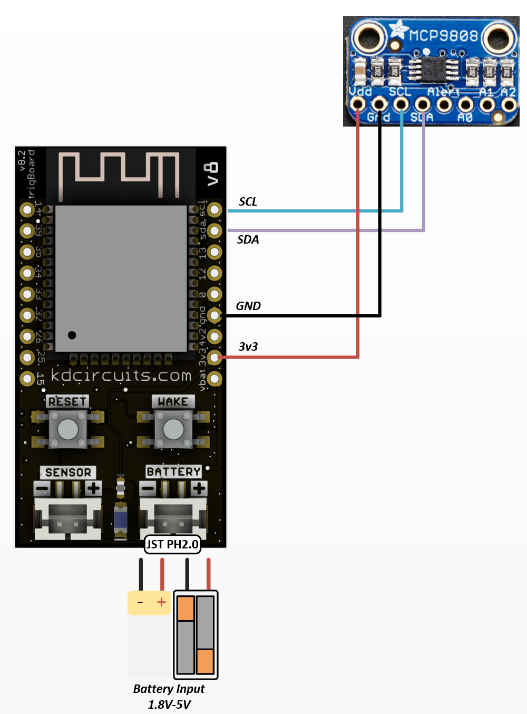
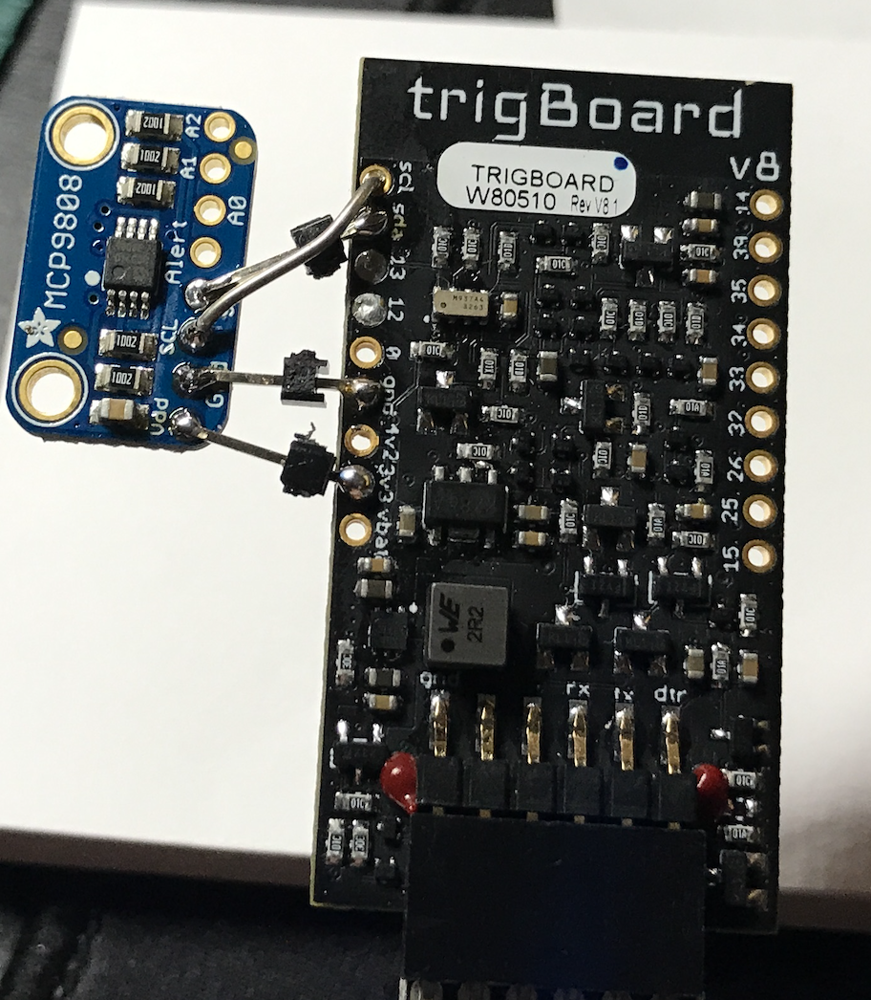

Arduino IoT Cloud - Temperature Monitor¶
Looking for a super easy and simple cloud service platform? This might be a good fit for you! There is also a free version to get you started, so that’s a nice perk as well.
I was also happy to see they have a mobile app you can use to view your dashboards:
Note
You can setup very easily with this using any ESP32 board, but this tutorial is specific to using the trigBoard and a temperature sensor. Hopefully, this tutorial will show you how to set this up with any kind of sensor with the trigBoard (or no sensor at all - just contact status)
Wiring¶
You can use this without
The wiring is simple - just need an MCP9808 Breakout Board from Adafruit which is a very accurate, fast, and reliable temperature sensor. Can also get these boards on Amazon for much cheaper.
 Or even cleaner:
Arduino IoT Cloud Setup¶
First thing to do is login to your account at Arduino IoT Cloud
Then let’s just get started and create a device - will be a third party board:
Will be ESP32, and select Dev Module:
Give the board a name!
Important save the Device ID and Secret Key - we’ll need these later
Now we see the device is created and can create a thing with variables:
Then we create variables:
For example, and as you’ll see in the code, these variable names need to line up with the actual variable used in the trigBoard code:
The example code uses three variables - pay attention to type (float, bool, etc) and since we’re just sending these up to the cloud, are read only and the periodic time doesn’t matter.
You have a Device ID, Secret Key, and now save the Thing ID at the bottom of this page - You need all three
From there, it’s all pretty easy to create dashboards to visualize the data. In the future, we’ll look at how to pull this data out of the Arduino Cloud to automate things, like turn something on/off on a threshold.
trigBoard Setup¶
To compile this code as-is, you will need the MCP9808 library from Adafruit as well as the supporting libraries for Arduino IoT Cloud. You can install all of these libraries from the Arduino IDE, you’ll find it: sketch>>Include Library>>Manage Libraries Note, you are still compiling the base firmware, so go to the Firmware Page for what is needed to do that
What’s really cool about this code is that it re-uses other fields in the trigBoard configurator to set this up to work with Arduino IoT Cloud, so no need to hard code things.
| Configurator | Arduino IoT Cloud |
|---|---|
| Pushover Key | Thing ID |
| Pushover API Token/Key | Device ID |
| Push Safer Key | Secret Key |
| Message when Wake Button Pressed | C or F |
So then when you launch the configurator, you setup your WiFi credentials, the interval time in the timer settings, then the Arduino IoT Cloud parameters.
Taking a look at the code, you’ll see how easy it is to modify variables - head over to the thingProperties.h tab:
void initProperties() {
ArduinoCloud.setBoardId(config.pushAPIKey);
ArduinoCloud.setSecretDeviceKey(config.pushSaferKey);
ArduinoCloud.setThingId(config.pushUserKey);
ArduinoCloud.addProperty(arduinoTemperature, READ, 1 * SECONDS, NULL);
ArduinoCloud.addProperty(arduinoBatteryVoltage, READ, 1 * SECONDS, NULL);
ArduinoCloud.addProperty(arduinoContact, READ, 1 * SECONDS, NULL);
When you scroll down there, you can see how the ArduinoCloud properties are added. These variables are declared as globals at the top of this file:
float arduinoTemperature;
float arduinoBatteryVoltage;
boolean arduinoContact;
From there, these variables are stuffed with the data we want to send up to the cloud:
Head back over to the main tab, and you’ll see how this is done:
arduinoTemperature = atof(temperatureString);
arduinoBatteryVoltage = getBattery();
arduinoContact = contactStatusClosed;//arduinoContact=true when contact closed
initProperties();//ArduinoIoTCloud
sendArduinoIoT();